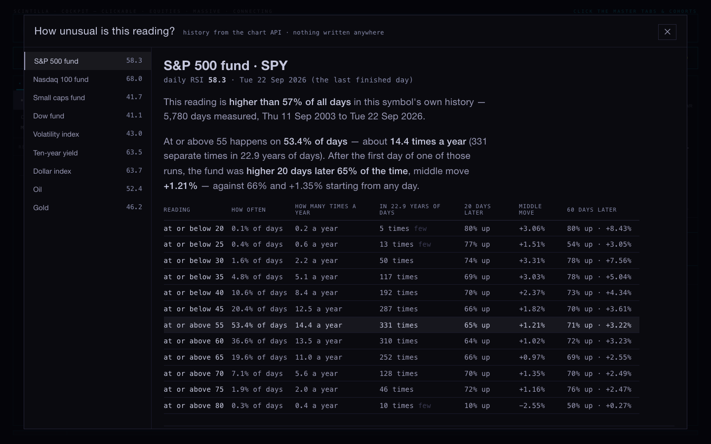
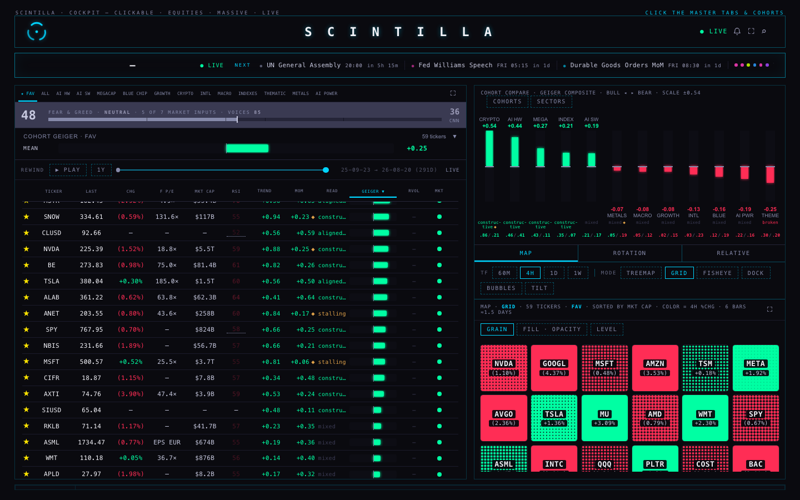
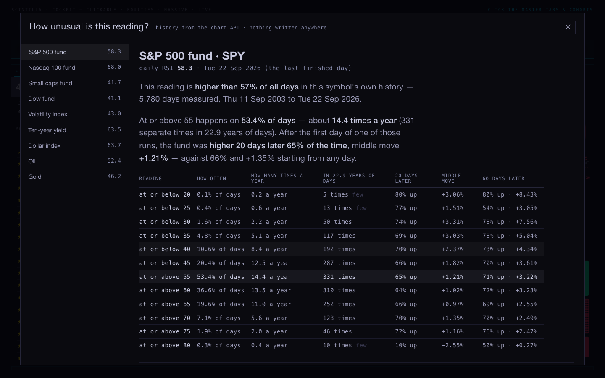
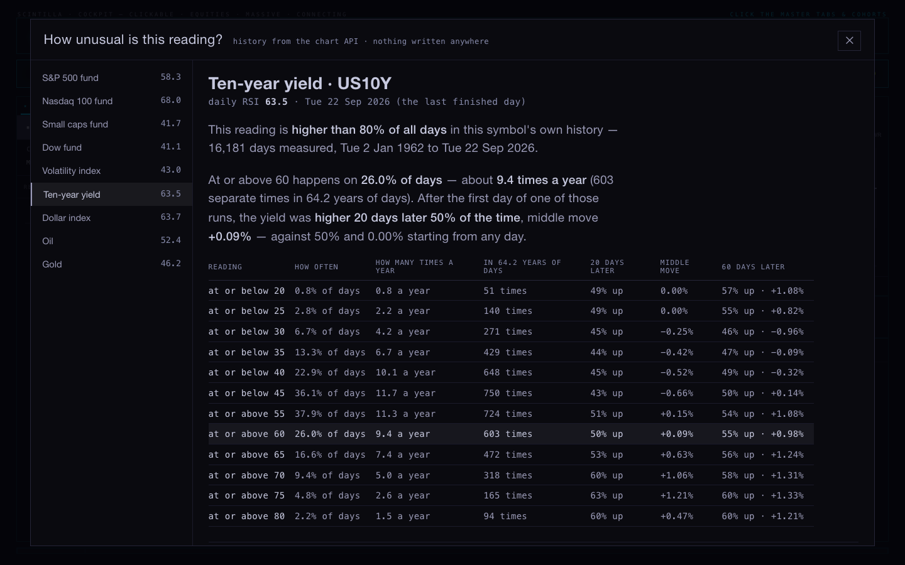
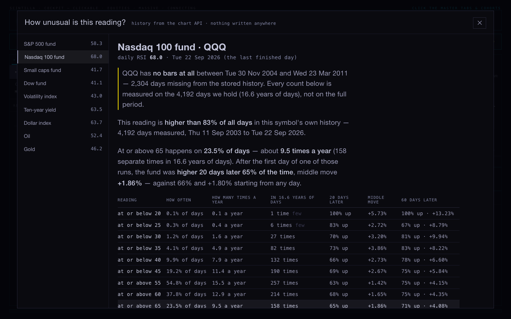
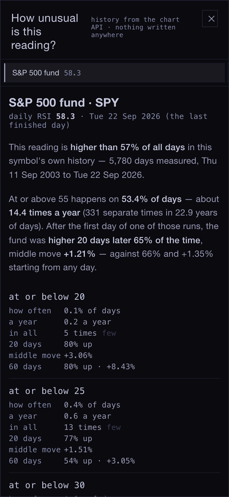

How unusual is this reading?
“How unusual is this reading? When am I going to be able to see that? … if the S&P daily RSI hits like 40, I find that not very frequent. How often has it been above or below that level? Do we have that or not?” Alan, 23 September
We do have it, and it is now on the Hub. Tap the RSI number or the Geiger bar beside any reading and it says where that number sits in that symbol's own history, how often it has happened, and what usually followed. Every figure is counted from finished daily bars. Nothing is estimated.
The answer to your S&P question
The S&P 500 fund's daily RSI sat at 58.3 at Tuesday's close — higher than 57% of all days since September 2003, so an ordinary reading.
At or below 40 happens on 10.6% of days — 192 separate dips in 22.9 years of days, about 8 a year. You were right that it is not frequent, and you were right about roughly how infrequent.
After the first day of one of those dips, the fund was higher 20 days later 70% of the time, middle move +2.37%. Starting from any day at all it was higher 66% of the time, middle move +1.35%. So the dip has been worth a little, not a lot — and at the deeper levels the samples get thin fast: at or below 20 has happened 5 times in 23 years.

Where it lives
- Beside the reading. Every RSI cell on the board opens it for that symbol; the nine you watch carry a dotted mark so you can see which ones have their own history behind them.
- The Geiger bar on a row opens the same page.
- The indexes and macro: S&P, Nasdaq 100, small caps, the Dow; the volatility index, the ten-year yield, the dollar, oil and gold.



Two things I found while building it
The Nasdaq 100's history has a six-year hole
QQQ answers with 4,206 daily bars where the other funds answer with 5,794. The reason is a single gap: no bars at all between 30 November 2004 and 23 March 2011. Every count for QQQ is therefore measured on 16.6 years of days, not 23. The page says so at the top of the QQQ read, in those words, before any number — and the rate “times a year” is divided by the years of days actually held, so the hole cannot make a reading look rarer than it is.

Five readings had no RSI on the board at all
The volatility index, the ten-year, the dollar, oil and gold get their RSI from a provider table that has never carried them, so those cells were a dash and would have stayed one. The reading exists — it comes from the same finished daily bars as everything else — so it is now shown, with its day and its source in the tooltip. That is a judgement I made while I was in there; it is one function and can be taken out on its own.
What the numbers mean, exactly
| a “day” | a finished daily bar from the chart API. Today's unfinished day is never counted. |
| a “time” | the first day of a run. A stretch that stays below 40 for nine days counts once, not nine times. |
| “20 days later” | the close 20 finished days after that first day, against the close on that day. |
| “middle move” | the middle of all those moves, so one crash or one moon shot cannot carry it. |
| “against any day” | the same measure starting from every day in the same history — the number to beat. |
| “few” | fewer than 25 examples. Shown, but too thin to lean on. |
History: the funds from 11 September 2003, the volatility index from 1990, oil from 2000, gold from 1975, the dollar from 1971, the ten-year yield from 2 January 1962 — 16,195 daily bars. The Geiger is placed across today's 364 names rather than across history, because its own past readings are not stored anywhere yet; the page says that in those words rather than leaving you to assume.

The rulebook, checked
UNABLE — deliverables/20260922/rulebook/RULEBOOK.html does not exist on this machine. It is
in neither repository's full history and nowhere on disk. → Workaround: I read the manuscript itself
instead — the Study Edition build, 13 documents, 34,256 words, the Contract and Chapters 1 to 11
(sha256 d4bf4eab…). That build is from 24 July and is behind the drafts on your iMac, which this
machine cannot reach. Chapters 12 to 16 — including the Patterns chapter — are not in it and are not on
this Mac, so I have judged what I could actually read and say so plainly below.
“The rule book is not my rules. It's technical analysis: rules of patterns … the statistics of technical-analysis patterns.”Alan, 23 September
What it actually is
Eleven chapters of grammar: what a level is, what counts as a break, what confirms and what invalidates, how to draw a channel, what a retest is, how volume and indicators may be used as witnesses. It is written so that two strangers marking the same chart would mark the same bar. That is a real achievement and it is the right thing to write before patterns. But it stops there.
The evidence, counted
| what I looked for | times it appears in the whole book |
|---|---|
| head and shoulders | 0 |
| cup and handle · double bottom · ascending/descending triangle | 0 |
| wedge | 1 — and it is a note saying wedges belong to Chapter 12 |
| pennant · double top | 1 each, in the same deferral |
| triangle | 2 |
| Fibonacci | 3 — admitted only as retracement fractions to be tested |
| “flag” | 24 — almost all of them bar.earnings, a true/false marker, not the chart pattern |
| every percentage figure in the book | 8 — all of them either a filter setting (3%) or somebody else's number (Bulkowski's ~60%) |
| “UNMEASURED” | 9 — the book's own honest word for the empty cells where its rates should be |
| disclaimer · not financial advice · past performance · risk warning | 0 of any of them |
Counted from the text of all 13 documents, saved in
evidence/rulebook-scan.json beside this page.
So: was it done badly?
Not badly — unfinished, and in the wrong order for what you want from it. The patterns were deliberately pushed into Chapter 12, which is not in this edition; the numbers were deliberately pushed to “the loop”, and the loop has promoted nothing, so the product file still reads “Currently published: 0 rules.” The book already promises the thing you are asking for — it says no claim may be published “without its current measured rate attached”. Nobody has attached one yet.
One thing is not a matter of taste: the book names entries and price objectives and carries no disclaimer of any kind. That must be fixed before any edition goes anywhere.
The chapter list it should have
Keep Chapters 1–11 as the grammar; they earn their place. Then the book you actually asked for is the second half, and every chapter of it is the same shape: the pattern drawn, the detector in plain words, how often it has happened, what followed, and whether it survives a fair attack.
| chapter | the pattern, and the numbers it must carry |
|---|---|
| 12 · Continuation | Flag, pennant, and the plain pause. How often after a run of a given size; what followed at 5, 20, 60 days; against any day. |
| 13 · Reversal | Head and shoulders and its inverse, double and triple tops and bottoms. Same five columns, plus how often the neckline break failed. |
| 14 · Triangles and wedges | Ascending, descending, symmetrical, rising and falling wedges. Which way they actually broke, not which way the folklore says. |
| 15 · Breakouts and their aftermath | Range and level breaks by size of the break, with the retest rate measured here instead of quoted from Bulkowski. |
| 16 · Gaps | Common, breakaway, runaway, exhaustion — defined so they can be told apart the day they happen, then the fill rate for each. |
| 17 · Retracement depth | Whether the Fibonacci fractions do anything the plain thirds and halves do not. The book already says these are testable; test them. |
| 18 · Candle events | Engulfing, pin, inside and outside days, on their own and inside a trend. |
| 19 · Indicator readings | Exactly what the Hub now shows: every level of RSI and the rest placed in its own history, per instrument. |
| 20 · Regime | Every table above, split by calm and volatile, and by the two halves of the history — a pattern that only works in one half does not work. |
| 21 · How these were measured | The method, the universe, the survivorship problem, and the settings that were tried and failed. Nothing promoted without this page. |
One pattern, built end to end
The bull flag, because the book's own note sends flags to Chapter 12, and because you can draw it on a napkin: a sharp run up, a short tight pause, then a close above the pause. Here is that rule turned into a detector, counted over 23 years, and then attacked four ways.
The rule, in words
The run: the close is at least 15% above where it was 10 finished days earlier. The pause: the next 5 to 15 days give back no more than half the run, never trade meaningfully above the run's high, and swing less each day than the run did. The breakout: a close above the highest point of the pause. That day is the signal. The detector only ever sees bars up to and including the signal day, and a second signal within 20 days of one already taken is skipped so the outcomes cannot overlap.
22 symbols — the four index funds, fifteen large companies, energy and gold — 2003 to 22 September 2026,
127,000 days of stored history. Detector: tools/patterns/bull-flag.mjs.
What it found
| 20 days after the signal | how many | higher | middle move |
|---|---|---|---|
| the bull flag | 59 | 52.5% | +0.07% |
| any day at all, same symbols | 119,499 | 58.1% | +1.11% |
| the same run and breakout with no tight pause required | 217 | 54.4% | +0.81% |
| the same number of days picked at random, 300 times over | 300 draws | 48% to 68% | −0.22% to +4.08% |
The four attacks, and why the last one is the one that matters
- Against any day. The only baseline that counts. The flag lost to it.
- Against strength alone. Take the same run and the same breakout but drop the requirement that the pause be tight and shallow: 217 signals, no better. So the shape of the pause was adding nothing.
- Against the hat. Pick 59 days at random, 300 times: the middle of that distribution is 56.7% higher. The flag's 52.5% is not even the middle of luck.
- Against its own settings. I ran 24 versions — runs of 6%, 8%, 10% and 15%, three pause depths, with and without the tightening rule. Not one of the 24 beat the any-day baseline at 20 days. Some looked good at 60 days — a 10% run gave about 70% higher and roughly double the usual 60-day move, on 145 to 238 signals — which is exactly the kind of number that gets a rule published.
So I split the history in half before believing it:
| 10% run, 60 days later | signals | higher | middle move | any day, same period |
|---|---|---|---|---|
| 2003 to 2014 | 60 | 58.3% | +4.49% | 60.7% · +2.48% |
| 2015 to 2026 | 128 | 75.8% | +7.50% | 62.8% · +3.23% |
In the first half it was worse than doing nothing; in the second half it looked excellent. A rule that reverses when you cut the history in two has not been shown to work — it has been shown to fit one stretch of the past. The same thing happens to the 15% version, in the opposite direction. That is the verdict: not proven, and not publishable as a rule.
What would make this one publishable
- A wider universe than today's survivors — these 22 names are companies that made it, which flatters every upward test on this page.
- Both halves of the history agreeing, and calm and volatile stretches agreeing.
- The count of settings tried printed beside the result, every time — I tried 24, and the page says so.
- An out-of-sample stretch nobody looked at while choosing the settings.
Reproduce: node tools/patterns/bull-flag.mjs · node tools/patterns/sweep.mjs ·
node tools/patterns/split-half.mjs. Output saved beside this page in evidence/.
What I did not do
- Nothing was deployed, pushed or merged, and nothing was written to any price table. The branch is
hub/how-unusual-20260923, for you to look at and merge. - No opinion, no signal, no recommendation appears anywhere in what I added. The read counts what happened and stops.
- The Geiger's own history still is not stored, so “how unusual” for the Geiger is across today's names only. Storing one number per name per day would fix that, and the read is already built to use it.
- The manuscript was not touched. I read one exported build; the current drafts and Chapters 12 to 16 are on the iMac, and the six missing publisher reviews are still missing.
- The Indicator Lab, the prototypes and the dashboard are byte for byte as they were.